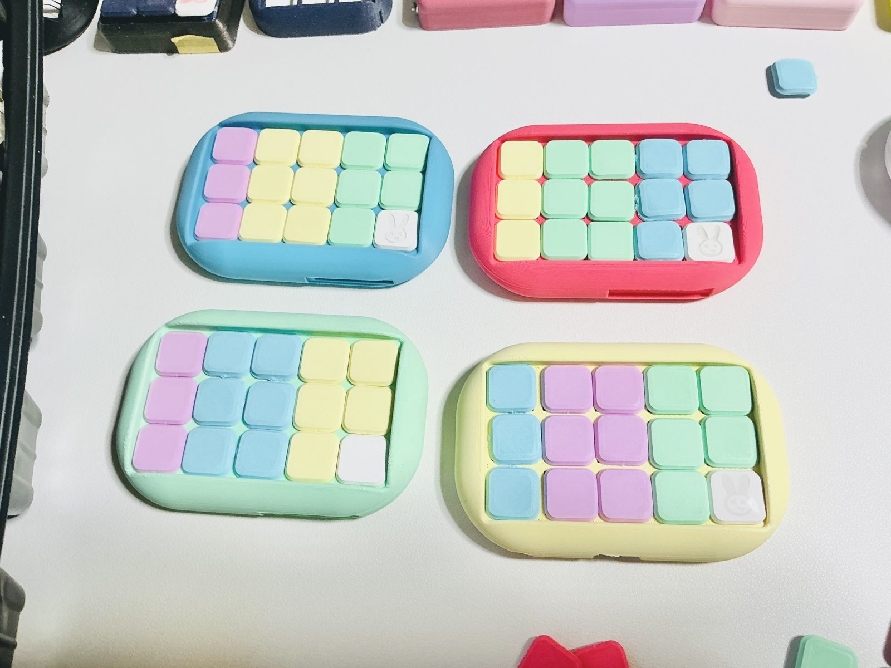
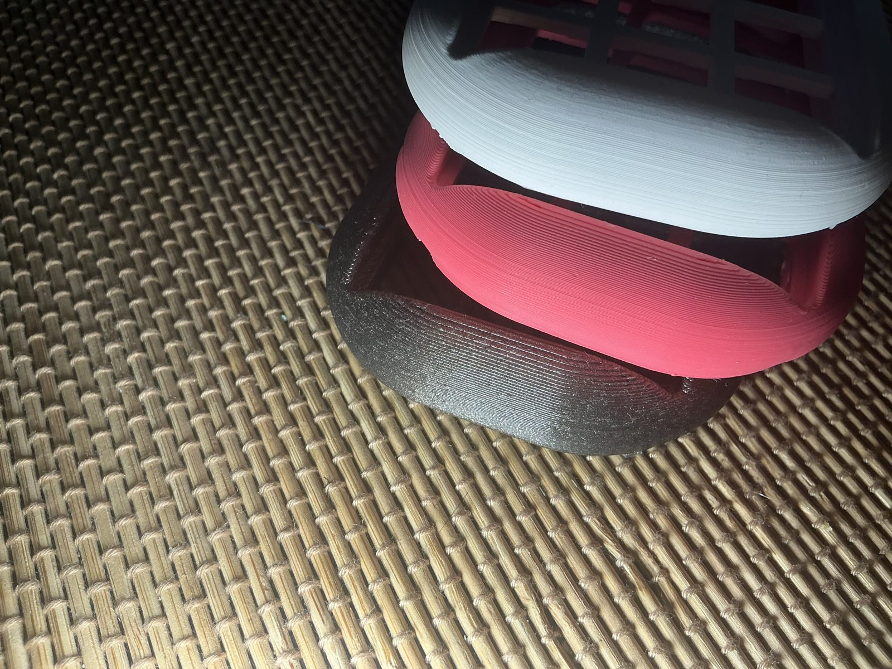
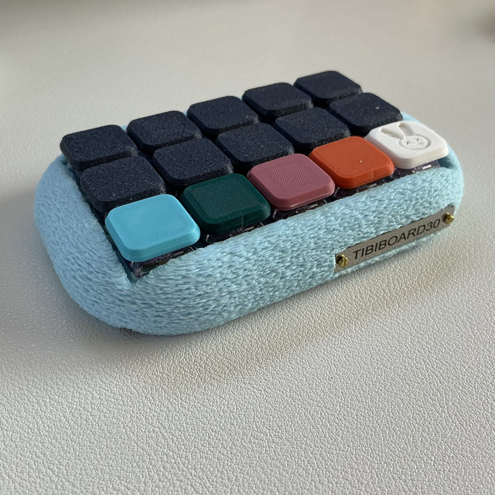
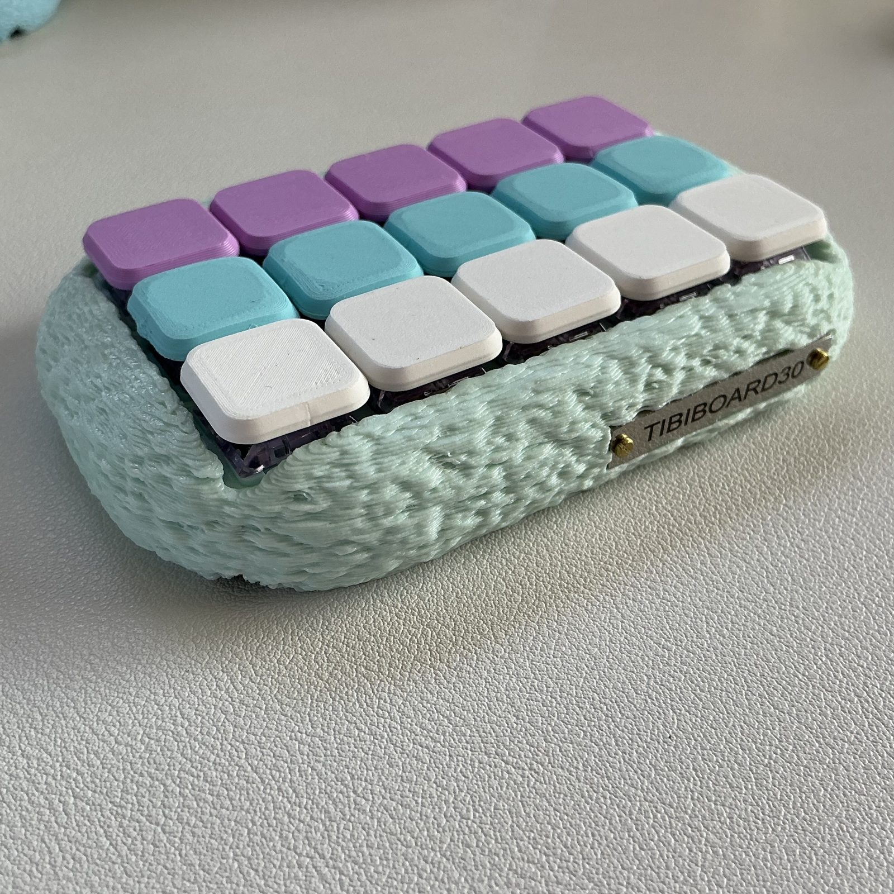
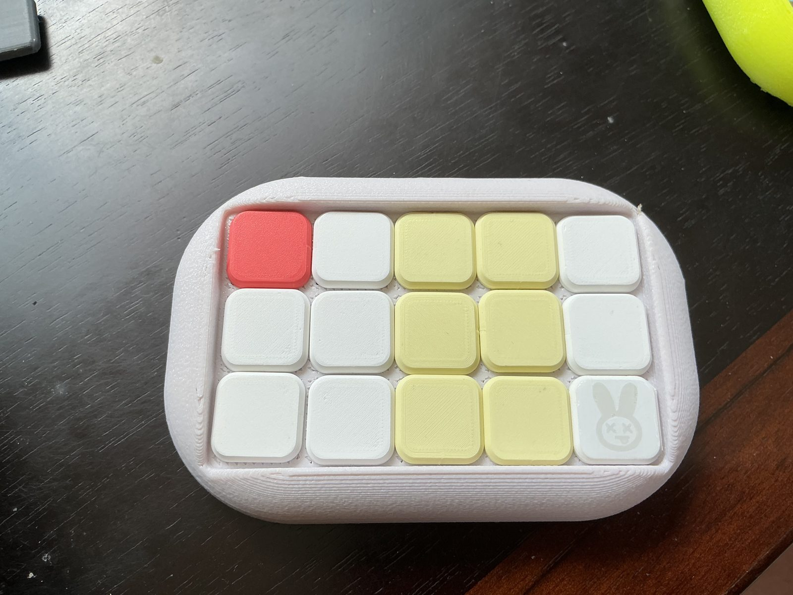
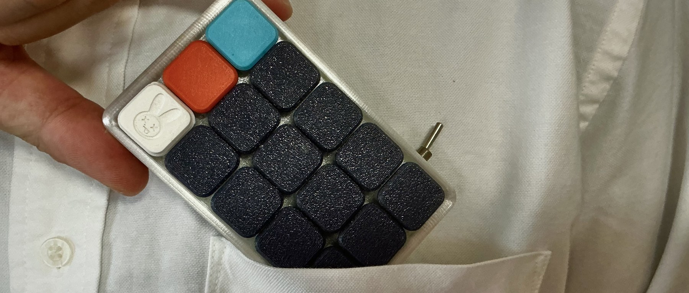

ケースは 3つの素材から
見た目は写真で。さわり心地と強さは 言葉で。


標準の PLA / PETG
- 見た目
- 肌が いちばん きれい
- 触り心地
- つるつる
- 強度
- ふつう
- 発色
- あざやか。色の種類が いちばん多い
- 正直に
- __要記入__(積層の線が見える など)



ガラスファイバー入り ガラスファイバー
- 見た目
- さらっと 落ちついた色。見た目では分かりにくい
- 触り心地
- しっとり・手になじむ
- 強度
- 傷と汚れに強い
- 発色
- 落ちついた色。あざやかさは PLA より ひかえめ
- 正直に
- __要記入__



クリア
- 見た目
- 光が とおる。印象が いちばん変わる
- 触り心地
- つるつる
- 強度
- ふつう
- 発色
- 色より 光。中が すけて見える
- 正直に
- __要記入__
表面の仕上げは Z(ざらざら・もこもこ)。ラメ入りもあるよ(ガラスファイバー・クリアに)。ラメ入りは タグで。